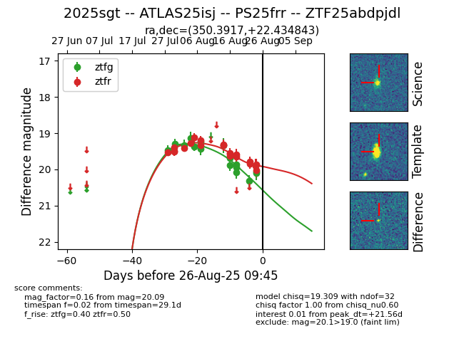

Target 2025sgt at 2025-08-26 09:45, see:
FINK: fink-portal.org/ZTF25abdpjdl
Lasair: lasair-ztf.lsst.ac.uk/objects/ZTF25abdpjdl
ALeRCE: alerce.online/object/ZTF25abdpjdl
TNS: wis-tns.org/object/2025sgt
YSE: ziggy.ucolick.org/yse/transient_detail/2025sgt
alt names
ZTF25abdpjdl (ztf,fink)
2025sgt (tns,yse)
ATLAS25isj (atlas)
PS25frr (panstarrs)
coordinates:
equatorial (ra, dec) = (350.3917,+22.43484)
galactic (l, b) = (97.0833,-35.88558)
photometry
last ztfg=20.09, ztfr=19.86
16 ztfg, 21 ztfr detections
